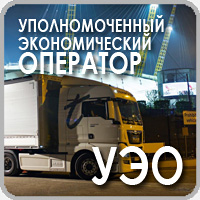

Уполномоченный экономический оператор представляет в таможенный орган, в регионе деятельности которого он находится, отчетность о товарах в соответствии с положениями постановления Государственного таможенного комитета Республики Беларусь от 26.04.2012 № 11 «О порядке ведения учета и представления отчетности для целей таможенного контроля».
Уполномоченный экономический оператор исключается из соответствующего реестра посредством отзыва свидетельства.Свидетельство отзывается путем принятия соответствующего решения в связи с наступлением одного из следующих обстоятельств:
1) несоблюдение уполномоченным экономическим оператором условий включения в реестр, а именно:
2) ликвидация юридического лица, которому присвоен статус уполномоченного экономического оператора;
3) реорганизация юридического лица, которому присвоен статус уполномоченного экономического оператора, за исключением реорганизации в форме преобразования, а также выделения из его состава одного или нескольких юридических лиц либо присоединения к нему другого юридического лица;
4) совершение уполномоченным экономическим оператором или его должностным лицом административного таможенного правонарушения, повлекшего конфискацию либо взыскание стоимости товаров на сумму более 250 базовых величин, или привлечение должностного лица уполномоченного экономического оператора к уголовной ответственности в соответствии со статьями 228–231 Уголовного кодекса Республики Беларусь в связи с осуществлением деятельности уполномоченным экономическим оператором;
5) неисполнение уполномоченным экономическим оператором обязанности по уплате таможенных платежей в добровольном порядке, а также неуплата в добровольном порядке процентов и (или) пеней, начисленных за неисполнение обязанности по уплате таможенных платежей;
6) неоднократное (два и более раза в течение календарного года) неисполнение уполномоченным экономическим оператором требований должностных лиц таможенного органа о предоставлении информации и документов, необходимых для проведения таможенного контроля, доступа на территорию и в помещения, находящиеся во владении, пользовании и (или) распоряжении уполномоченного экономического оператора, для проведения таможенного контроля;
7) нарушение уполномоченными экономическим оператором срока информирования Государственного комитета об изменении сведений, указанных при включении в реестр;
8) установление, что статус уполномоченного экономического оператора был присвоен.
Порядок отзыва свидетельства о включении в реестр уполномоченных экономических операторов
Порядок отзыва свидетельства о включении в реестр уполномоченных экономических операторов определен Положением. Решение об отзыве свидетельства оформляется приказом Председателя Государственного комитета не позднее 15 рабочих дней, следующих за днем:
– получения информации от таможенного органа, установившего наступление одного из обстоятельств, являющихся основанием для принятия решения об отзыве свидетельства;
– инициирования такого решения самостоятельным структурным подразделением Государственного таможенного комитета, установившим наступление одного из обстоятельств, являющихся основанием для принятия решения об отзыве свидетельства.
Государственный таможенный комитет письменно уведомляет юридическое лицо об отзыве свидетельства с указанием оснований отзыва и вносит соответствующие изменения в реестр уполномоченных экономических операторов. При получении документов, свидетельствующих о необоснованном принятии решения об отзыве свидетельства, Государственный таможенный комитет принимает решение о возобновлении действия статуса уполномоченного экономического оператора с даты отзыва свидетельства.
Принятие решения о возобновлении статуса уполномоченного экономического оператора осуществляется в порядке, предусмотренном для присвоения заинтересованному лицу статуса уполномоченного экономического оператора.
Юридическое лицо не вправе обращаться с заявлением о присвоении статуса уполномоченного экономического оператора в течение одного года со дня принятия решения об отзыве свидетельства о включении в реестр уполномоченных экономических операторов, если такое решение было принято по следующим основаниям:
– совершение уполномоченным экономическим оператором или его должностным лицом административного таможенного правонарушения, повлекшего конфискацию либо взыскание стоимости товаров на сумму более 250 базовых величин, или привлечение должностного лица уполномоченного экономического оператора к уголовной ответственности в соответствии со статьями 228–231 Уголовного кодекса Республики Беларусь в связи с осуществлением деятельности уполномоченного экономического оператора;
– неисполнение уполномоченным экономическим оператором обязанности по уплате таможенных платежей в добровольном порядке, а также неуплата в добровольном порядке процентов и (или) пеней, начисленных за неисполнение обязанности по уплате таможенных платежей;
– установление, что статус уполномоченного экономического оператора был присвоен на основе недостоверных данных, представленных заинтересованным лицом и послуживших основанием для присвоения такого статуса;
– неоднократное (два и более раза в течение календарного года) неисполнение уполномоченным экономическим оператором требований должностных лиц таможенного органа о предоставлении информации и документов, необходимых для проведения таможенного контроля, доступа на территорию и в помещения, находящиеся во владении, пользовании и (или) распоряжении уполномоченного экономического оператора, для проведения таможенного контроля.